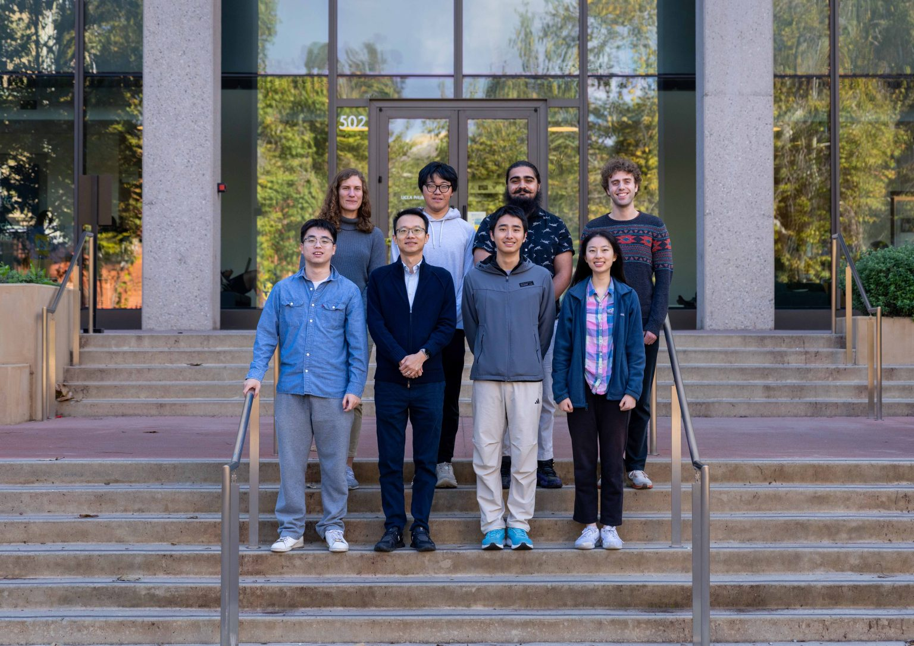

The group works across observation, theory, numerical modeling, and magnetometer development, with results spanning Jupiter's deep interior, Saturn's internal magnetic field and ionosphere, and instrument work for lunar and near-Earth magnetic measurements. The group is not currently recruiting.
Members
Dr. Paula WulffPostdoctoral Scholar · 2024 – present
[research focus and Scholar link to supply]
Chengzhi MaoGraduate Student Researcher · 2025 – present
[research focus and Scholar link to supply]
Miranda ChangGraduate Student Researcher · 2023 – present
[research focus and Scholar link to supply]
Wenyu ZhangGraduate Student Researcher · 2023 – present
[research focus and Scholar link to supply]
Kyle WebsterGraduate Student Researcher
[dates, research focus and Scholar link to supply]
Donglai MaIn the 2025 group photo
[role, dates and research focus to confirm — not on the current roster]
Nayaab SinghUndergraduate Student Researcher · Class of 2025
[research focus to supply]
Alumni
Where members of the group went next.
Dr. Chuan QinAssistant Researcher · 2022 – 2025
[current position to supply]
Ian FuUndergraduate Student Researcher · 2022 – 2024, Class of 2024
Now a graduate student at Stanford University.
Runa IndreiUndergraduate Student Researcher · 2023 – 2024, Class of 2024
Now a graduate student at the University of Southern California.
Roster last updated November 2025.